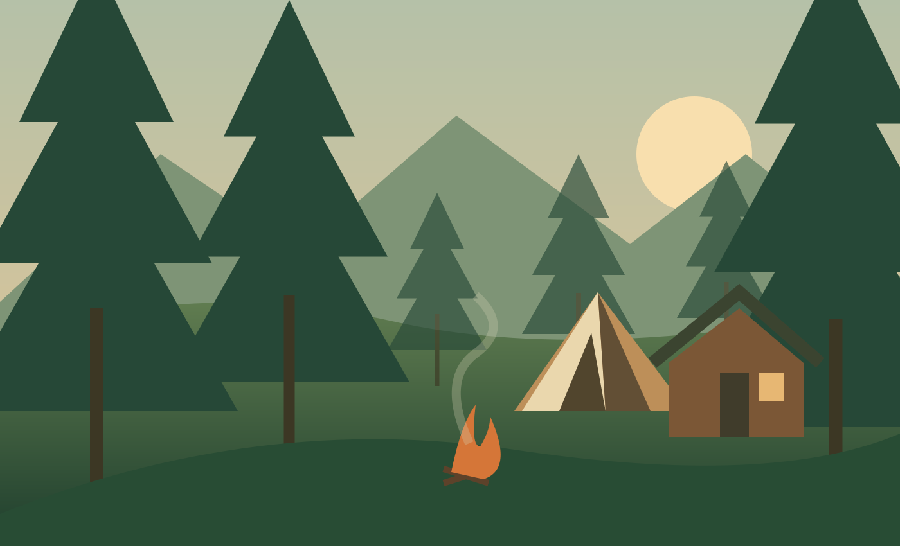

NORTH WALES · 42 PITCHES · DARK SKY COUNTRY
Woodsmoke,
cold rivers,
and no wifi
in the field.
A small campsite on the edge of Snowdonia.
Fires allowed, dogs welcome, showers hot.
A PLACE TO UNROLL
Find your kind
of outside.
Under canvas. In a van.
Or a little more like home.
SMALL ENOUGH TO KNOW YOUR WAY
Five fields
and a stream.
Schematic illustration, not a navigation map.
THE SMALL THINGS, SORTED
A hot shower goes a long way.
01 / Hot showers20p for six minutes
02 / Washing upCovered sinks
03 / Laundry£4 per load
04 / Drinking waterPoints on every field
05 / Waste pointsChemical and grey water
06 / Raised fire pits£8 hire per stay
07 / Fuel for the fireLogs £6 · kindling £3
08 / Dog fieldFenced, for off-lead running
HONESTLY, BEFORE YOU BOOK
A few things
we'd want to know.
What is the ground like after rain?
The meadow drains well. Woodland softens after two days of heavy rain. We'll move you rather than let you get stuck.
How far are the showers?
At most 140 metres, from the far corner of the van field. Central, hot, worth the walk.
Will my phone work?
Patchy. EE works on most of the site, others mostly don't. Free wifi at reception. Deliberately nowhere else.
When does it get quiet?
Music off at ten, quiet from eleven. We enforce it. This is honestly not a party site.
Can we bring the dog?
Two per pitch, £4 each per stay. On leads except in the fenced dog field.
WHEN THE LIGHT GOES
Fires are allowed.
Properly.
Every grass pitch can have a fire in a raised hired pit. £8 per stay. Logs £6 per net, kindling £3, from a plantation nine miles away. Out by midnight. Never on the grass. Follow any fire restrictions in force.
The brief places us inside a Dark Sky reserve. Low, downward-facing lights leave room for the Milky Way on clear, moonless nights. Actual conditions and designation need confirmation.
A LITTLE FURTHER AFIELD
Walk out. Wander back.
Boots on.
Cwm Idwal circuit 12 min drive · 3 hour walk
Aber Falls 20 min drive · 90 min walk
River path from the gate 40 minutes on foot
Moel Wnion summit 3 hours from the gate
Then a pint.
The Bull 1.4 miles · food until 9
Ty Gwyn 2.8 miles · dog friendly
The Slaters Arms 4 miles · a good local pint
Times approximate. Check opening hours, weather and routes before setting out.
SO EVERYONE HAS A GOOD STAY
The plain version.
Arrival 1pm to 8pm. Departure by 11am. Music off at 10pm, quiet from 11pm. Two dogs per pitch, on leads except in the dog field. Fires only in hired pits, out by midnight.
The brief's group policy limits single-sex groups to four; please confirm current group arrangements directly. Cancellation: free up to 14 days before, 50% up to 7 days, non-refundable after. Confirm terms with the site before paying.
YOUR NEXT FEW DAYS
A patch of peace.
Sample availability only. Choose arrival and departure below. A marked night is unavailable for that pitch type.
Calendar selection sets arrival; use the departure field for your final day. Crossed dates are sample sold-out nights.